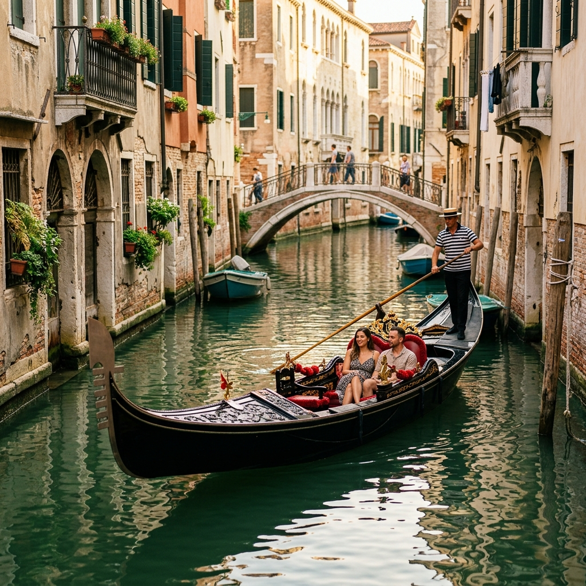
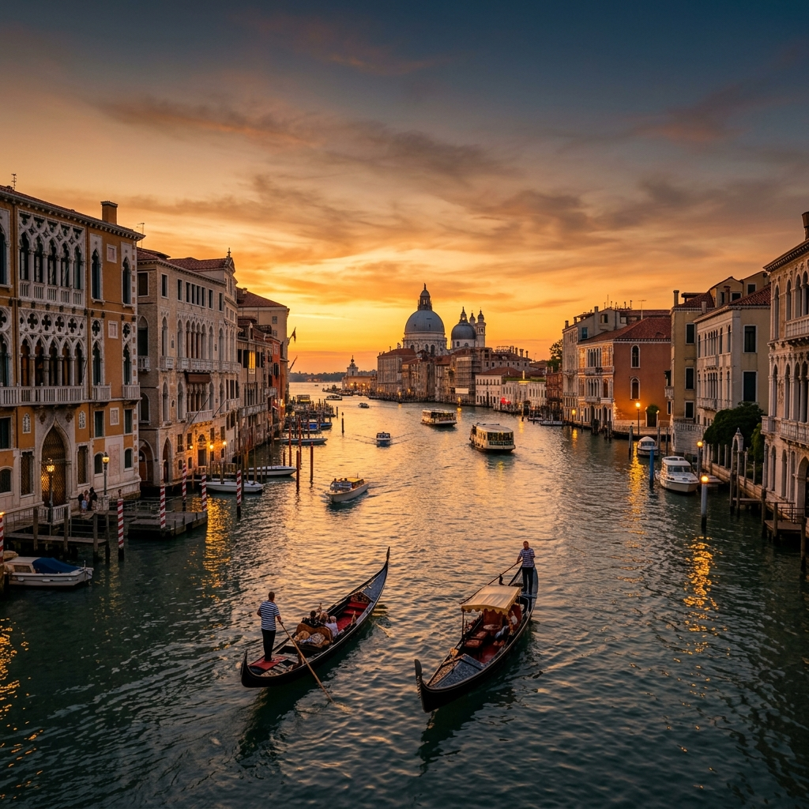
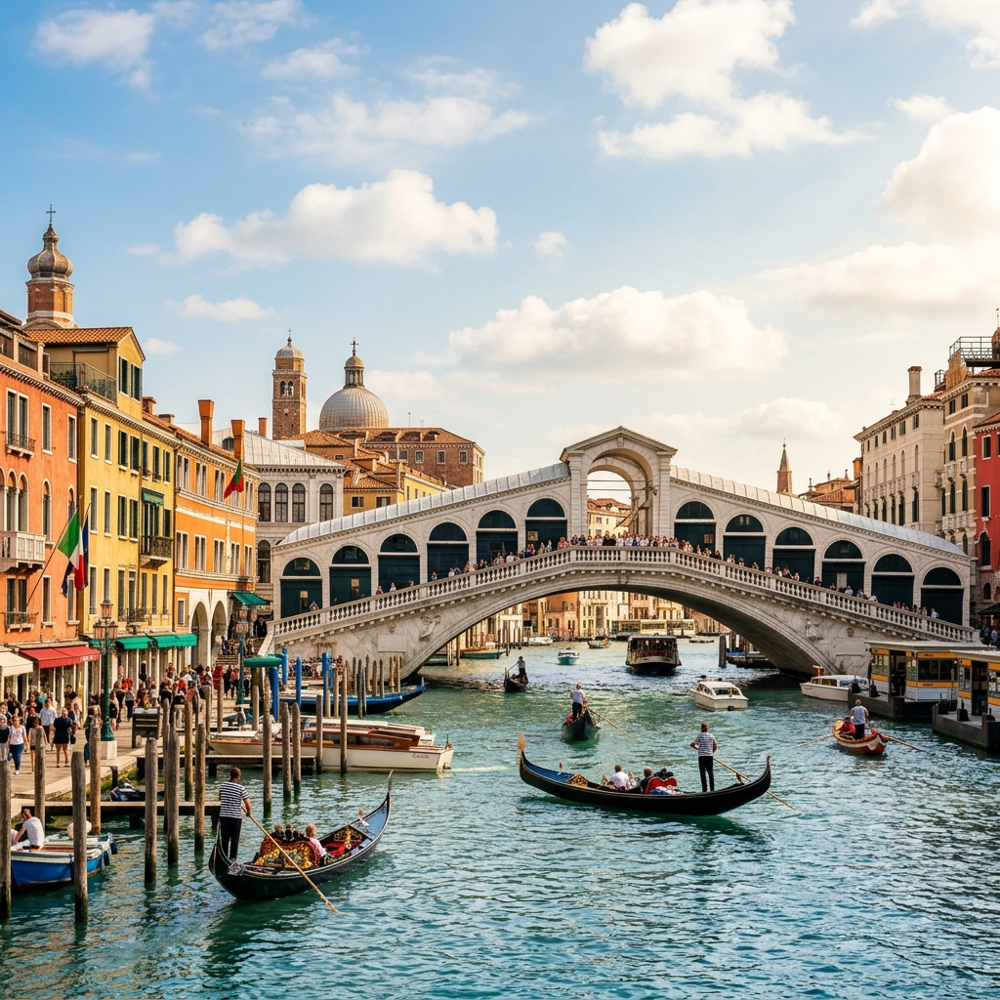

ExperienciaLos Canales y Góndolas
La red fluvial de Venecia es el alma de la ciudad. Un paseo en góndola te permitirá descubrir rincones ocultos y palacios cuyos cimientos de madera han resistido siglos bajo el agua.
Incluir en mi rutaVenecia, capital de la región de Véneto en el norte de Italia, es un prodigio de la ingeniería y el arte, construida sobre un archipiélago de pequeñas islas unidas por puentes.
Navegar en góndola por sus canales medievales, admirar la suntuosa arquitectura renacentista y perderse en el misticismo de sus callejuelas estrechas es una experiencia que transforma a todo viajero. Sin coches, sin el ruido del tráfico moderno; solo el sonido del agua y de la historia resonando en sus fachadas de piedra.

Reconocida por la UNESCO por su singularidad y valor cultural incomparable.

ExperienciaLa red fluvial de Venecia es el alma de la ciudad. Un paseo en góndola te permitirá descubrir rincones ocultos y palacios cuyos cimientos de madera han resistido siglos bajo el agua.
Incluir en mi ruta
ArquitecturaEl puente más antiguo y emblemático de los cuatro que cruzan el Gran Canal. Su arco de piedra y su doble fila de tiendas de souvenirs forman una estampa inconfundible de Venecia.
Incluir en mi rutaLa avenida principal de la ciudad flotante. Un vibrante cauce de 4 kilómetros rodeado de más de 170 palacios imperiales bizantinos, góticos, renacentistas y barrocos.
Incluir en mi rutaLa mejor época para viajar es durante la **primavera (abril a junio)** y el **otoño (septiembre a octubre)**. Las temperaturas son agradables, hay menos humedad y evitas las grandes aglomeraciones de turistas del verano.
Si viajas en invierno, podrías experimentar el fenómeno del **Acqua Alta** (marea alta), una inundación temporal de la ciudad que dura unas pocas horas y resulta una experiencia única, para la cual solo necesitarás unas botas altas de agua.
En Venecia **no existen los coches**. La única forma de desplazarse es a pie o en barco. El medio de transporte público es el **Vaporetto**, un autobús acuático que recorre el Gran Canal y conecta con las islas vecinas como Murano y Burano.
Para cruzar el Gran Canal de un lado a otro por zonas sin puente, busca los carteles de **Traghetto**. Son góndolas grandes manejadas por dos gondoleros que te cruzan de orilla por solo 2 euros.
Evita los menús turísticos con fotos en la entrada. Lo mejor es ir de **Bari** en bar por los tradicionales *Bacari* venecianos y pedir *Cicchetti* (tapas locales) acompañados de un *Ombra* (pequeño vaso de vino de la casa) o un Spritz.
No dejes de probar el *Baccalà Mantecato* (bacalao cremoso sobre polenta), las *Sarde in Saor* (sardinas marinadas agridulces) o los espaguetis con tinta de calamar (*Spaghetti al nero di seppia*).
Esta página web ha sido diseñada e implementada utilizando herramientas de Inteligencia Artificial para la práctica oficial de desarrollo rápido de sitios web públicos.
Las iniciales **CSC** son la marca distintiva del alumno autor de este proyecto, integradas estéticamente en el logotipo, el planificador y el pie de página del portal.